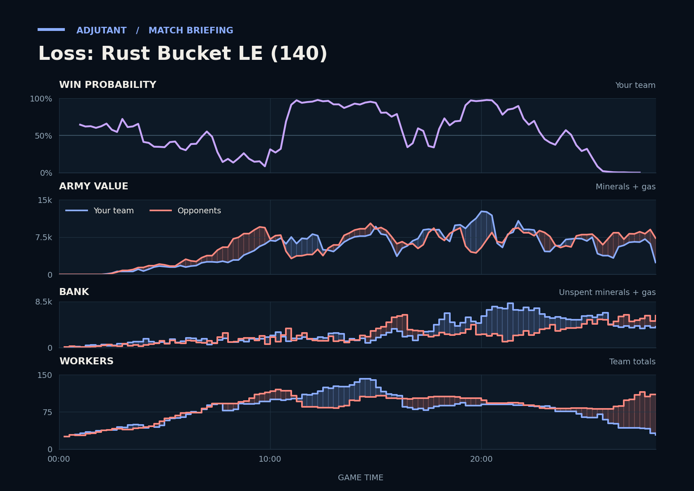

Loss: Rust Bucket LE (140)
Provisional debrief. The full report (timeline, insights and analysis) is being generated.

**Loss.** DeltaD's Carriers killed far more at Scallop's bases from 14:35 than the duo took back, and that trade opened the army gap that lost the last fight.
**Why**
- 7:12–8:03: Phoenixes killed 15 Drones and Overlords while losing no army, leaving TakeTheTip supply-blocked.
- 14:35–16:34: Carriers and a Void Ray killed Scallop's SCVs and whole army, leaving Scallop with no army.
- 27:45–28:15: DeltaD's army was about twice the duo's, and TakeTheTip lost their Drones and a hatchery, ending in gg.